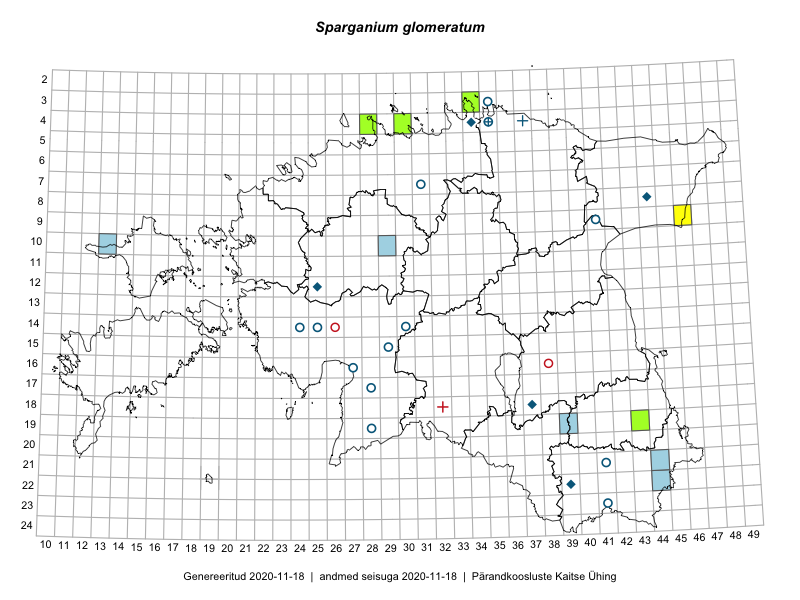

Sparganium glomeratum — kera-jõgitakjas
Sparganiaceae :: Sparganium glomeratum Laest. ex Beurl. (37)

Kaart põhineb 43 kirjel:
vaatlusi 6
herbaareksemplare 31
ELFi kirjeid1 6
Taime kaasaegsed ja ajaloolised leiukohad asuvad 25 ruudus.
Tingmärgid ja ruutude arvud periooditi (U2 / V3 )
█ 2006–2020 (9/–)
◆/◇ 1971–2005 (4/4)
○ 1921–1970 (11/11)
+ kuni 1920 (2/2)
× hävinud (–/0)
? kaheldav (–/0)
| Ruut | Leidja(d) | Leiuaeg | Kirje |
|---|---|---|---|
| 09-46 | R. Tischler | 2009-08-28 | ruut/ala: Sparganium glomeratum Laest. ex Beurl. |
| 14-24 | A. Tomson | 1936-07–1936-08 | ruut/ala: Sparganium glomeratum Laest. ex Beurl. |
| 14-25 | A. Tomson, T. Lippmaa | 1936-07–1936-08 | ruut/ala: Sparganium glomeratum Laest. ex Beurl. |
| 14-24 | A. Tomson | 1936 | ruut/ala: Sparganium glomeratum Laest. ex Beurl. |
| 16-27 | A. Tomson | 1936-06–1936-09 | ruut/ala: Sparganium glomeratum Laest. ex Beurl. |
| 19-28 | 1936-06–1936-08 | ruut/ala: Sparganium glomeratum Laest. ex Beurl. | |
| 15-29 | T. Lippmaa | 1928-08-03 | TU265994: Sparganium glomeratum Laest. ex Beurl. |
| 15-29 | T. Lippmaa | 1928-08-03 | TU265995: Sparganium glomeratum Laest. ex Beurl. |
| 21-41 | L. Pihlapuu | 1961-07-08 | TU265996: Sparganium glomeratum Laest. ex Beurl. |
| 23-41 | L. Pihlapuu | 1957-07-15 | TU265997: Sparganium glomeratum Laest. ex Beurl. |
| 04-37 | H. Hiir | 1914-07 | TU270246: Sparganium glomeratum Laest. ex Beurl. |
| 04-37 | R. Lehbert | 1905-07 | TU270247: Sparganium glomeratum Laest. ex Beurl. |
| 04-37 | R. Lehbert | 1901 | TU270248: Sparganium glomeratum Laest. ex Beurl. |
| 23-41 | L. Pihlapuu | 1957-07-15 | TU270249: Sparganium glomeratum Laest. ex Beurl. |
| 04-35 | R. Lehbert | 1922-07 | TAM0058784: Sparganium glomeratum Laest. ex Beurl. |
| 04-35 | R. Lehbert | 1910-08-10 | TAM0058786: Sparganium glomeratum Laest. ex Beurl. |
| 04-35 | R. Lehbert | 1910-08-10 | TAM0058787: Sparganium glomeratum Laest. ex Beurl. |
| 04-35 | R. Lehbert | 1910-08-10 | TAM0058788: Sparganium glomeratum Laest. ex Beurl. |
| 04-35 | R. Lehbert | 1910-08-10 | TAM0058789: Sparganium glomeratum Laest. ex Beurl. |
| 04-35 | R. Lehbert | 1910-07-06 | TAM0058790: Sparganium glomeratum Laest. ex Beurl. |
| 04-37 | R. Lehbert | 1905-07-16–1905-07-28T23:00Z | TAM0058791: Sparganium glomeratum Laest. ex Beurl. |
| 04-37 | R. Lehbert | 1905-07-16–1905-07-28T23:00Z | TAM0058792: Sparganium glomeratum Laest. ex Beurl. |
| 09-41 | M. Kask | 1963-06-29 | TAA0111276: Sparganium glomeratum Laest. ex Beurl. |
| 12-25 | Thea Kull | 2000-06-28 | TAA0111277: Sparganium glomeratum Laest. ex Beurl. |
| 03-35 | R. Lehbert | 1926 | TAA0111278: Sparganium glomeratum Laest. ex Beurl. |
| 03-35 | R. Lehbert | 1926 | TAA0111279: Sparganium glomeratum Laest. ex Beurl. |
| 09-41 | M. Kask | 1963-06-29 | TAA0111283: Sparganium glomeratum Laest. ex Beurl. |
| 04-34 | M. Kask, A. Toomel | 1980-07-09 | TAA0111284: Sparganium glomeratum Laest. ex Beurl. |
| 06-31 | E. Muru | 1958-07-06 | TAA0111285: Sparganium glomeratum Laest. ex Beurl. |
| 04-34 | M. Kask | 1975-08-06 | TAA0111286: Sparganium glomeratum Laest. ex Beurl. |
| 04-34 | M. Kask | 1975-08-06 | TAA0111287: Sparganium glomeratum Laest. ex Beurl. |
| 04-28 | Sander Laherand, Nele Jõessar, Tõnu Ploompuu | 2016-07-25 | TAA0135786: Sparganium glomeratum Laest. ex Beurl. |
| 18-37 | Helle Mäemets | 2004-09-15 | TAA2003665: Sparganium glomeratum Laest. ex Beurl. |
| 08-44 | Helle Mäemets | 1985-08-04 | TAA2003797: Sparganium glomeratum Laest. ex Beurl. |
| 04-30 | Tiina Elvisto | 2018-09-08 | TAA0149979: Sparganium glomeratum Laest. ex Beurl. |
| 03-34 | Toomas Kukk, Rein Kalamees | 2019-08-06 | TAA0148629: Sparganium glomeratum Laest. ex Beurl. |
| 03-34 | Toomas Kukk, Rein Kalamees | 2019-08-06 | TAA0148630: Sparganium glomeratum Laest. ex Beurl. |
| 19-39 | Maris Kelner | 2009-08-02 | ELF: 11616 |
| 10-29 | Toivo Sepp | 2009-09-11 | ELF: 10352 |
| 10-29 | Toivo Sepp | 2009-09-11 | ELF: 10353 |
| 10-13 | Ülo Väli, Vivika Meltsov | 2010-07-16 | ELF: 17787 |
| 22-44 | Kairi Sepp, Sille Tammik | 2010-08-04 | ELF: 19292 |
| 21-44 | Kairi Sepp, Sille Tammik | 2010-08-04 | ELF: 19293 |
Eestimaa Looduse Fondi (ELF) andmebaas sisaldab inventeeritud koosluste kirjeldusi ja liigiloendeid. Eriti rohkesti on andmeid märgalade kohta.↩︎
Ruutude arv uue atlase andmekogu järgi. Muuhulgas arvestab vanemat herbaariumi, 2005. aasta atlase välitöölehtedelt uuesti digitaliseeritud andmeid jne. Uue atlase andmekogust pärinevad andmed on kaardile kantud siniste sümbolitega.↩︎
Ruutude arv 2005. aasta atlase (Kukk, T., Kull, T., Eesti taimede levikuatlas. Eesti Maaülikool, Põllumajandus- ja Keskkonnainstituut, Tartu, 2005) järgi. Andmeallikana on kasutatud levik.exe programmi, kus igas ruudus on registreeritud vaid uusim leid. Seetõttu on vanemate perioodide kohta andmed puudulikud. Kasutatud levik.exe andmestikus leidub mõningaid kõrvalekaldeid atlase trükis ilmunud versioonist, sagedamini tarnade ja käpaliste seas. Lisaks leidub selles andmestikus valik liike (peamiselt väheste leidudega tulnuktaimed), mille kaarte trükis ei avaldatud. Vana atlase andmed ruutudest, milles ei ole uue atlase andmekogus leide enne 2006. aastat, on kaardil esitatud punaste sümbolitega. Vana atlase andmetel hävinud ja kaheldavaid leiukohti pole hilisemate (taas)leidude põhjal korrigeeritud.↩︎